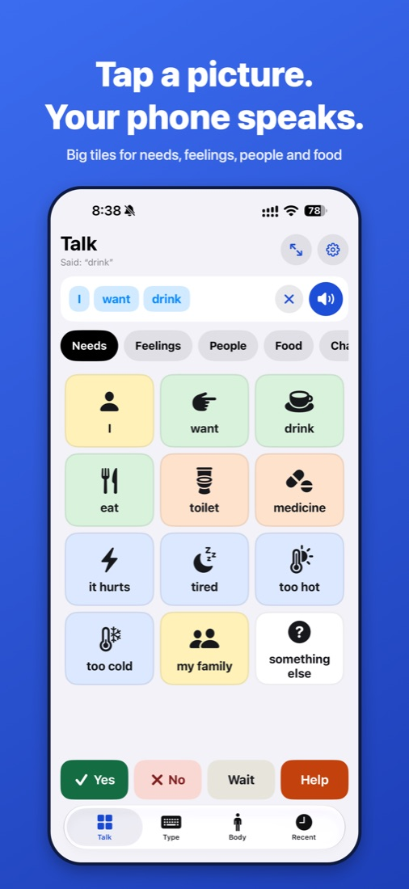
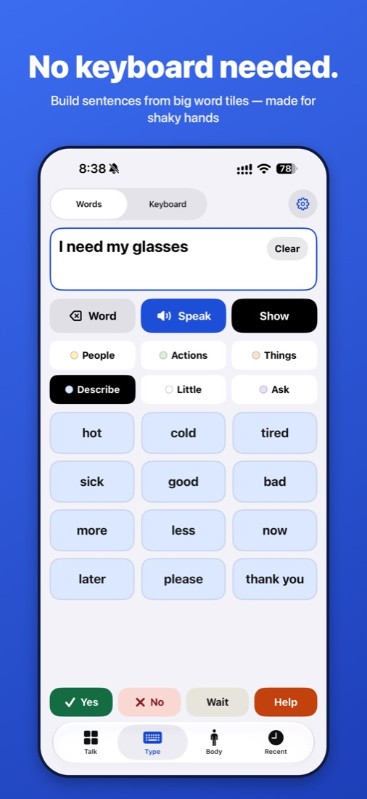
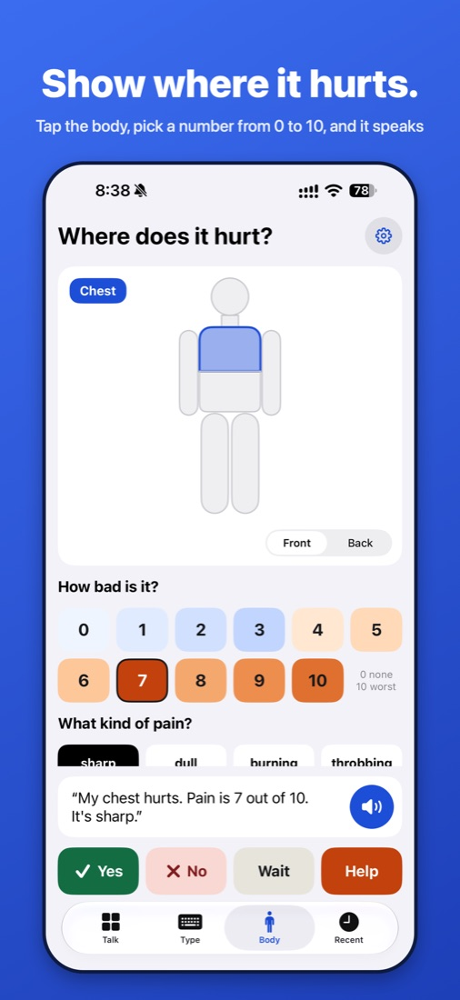
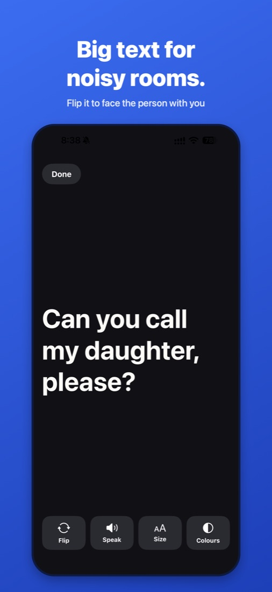

A voice for when speaking is hard.
Tap a picture and your phone says it out loud. Build sentences from big word tiles, show your words in giant text, or point to where it hurts.
Download on the App Store
Made for real moments
Ready in 30 seconds with a starter board that fits your situation. Change every tile later.
Lost your voice for now
Throat surgery, vocal rest, laryngitis. Quick chat phrases and fast typing.
Stroke or brain injury
Big pictures for everyday needs. Tiles never move, so muscle memory keeps working.
In hospital
Yes / No, call the nurse, care needs, and a pain scale from 0 to 10.
Parkinson's and tremor
Word tiles instead of a keyboard, hold-to-tap, and protection from accidental double taps.
What's inside
Everything speaks with Apple's on-device voices — including your own Personal Voice.



Yes · No · Wait · Help
On every screen, in the same place — plus a Home Screen and Lock Screen widget.
Show mode
Giant text you can flip to face someone. Great for noisy rooms, masks and hearing loss.
Make it yours
Hold any tile to add your own photos, change its words and pick a colour.
Works on every screen
iPhone, iPad and the foldable iPhone Duo. Siri and the Action button too.
Private by design
No account. No ads. No tracking. No AI. No internet needed. Everything you say and everything you create stays on your device. Read the privacy policy.